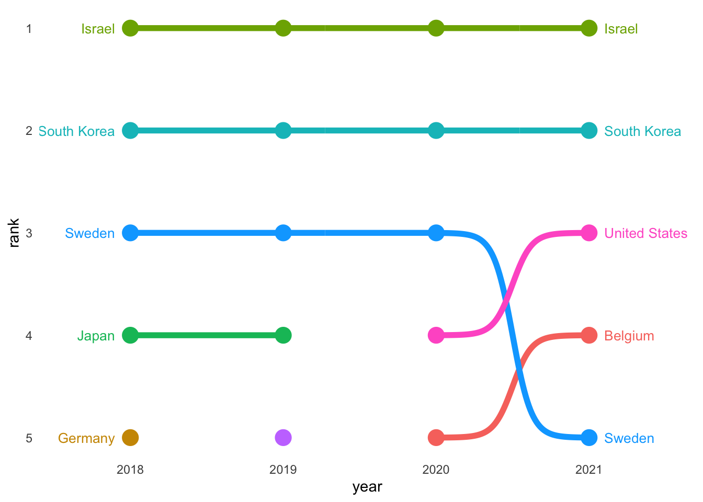
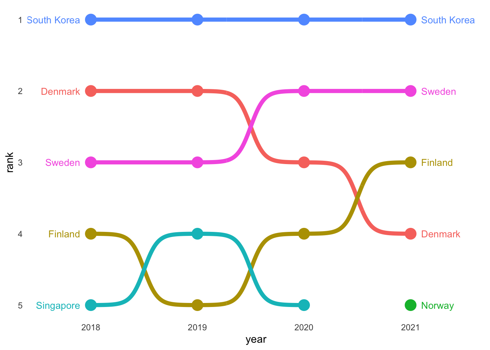
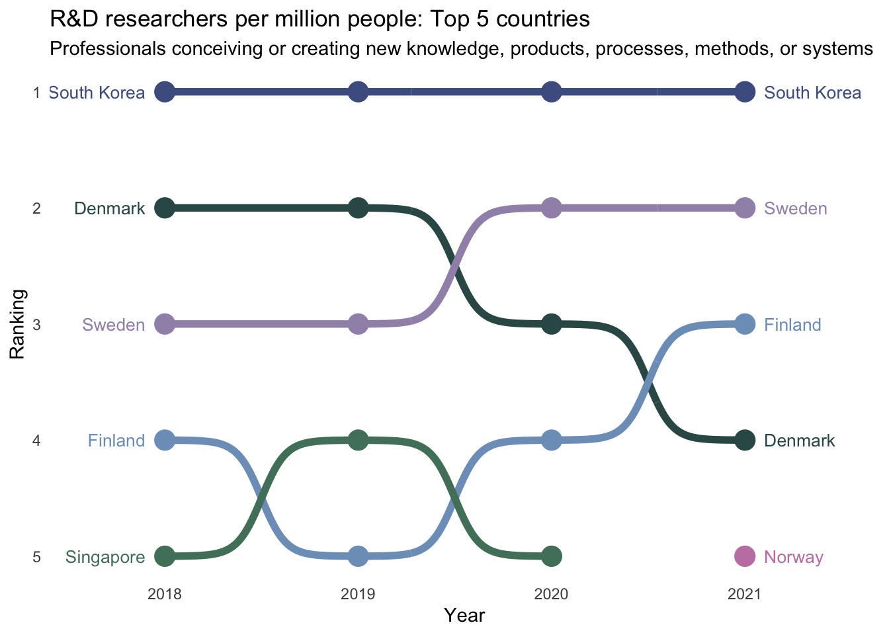
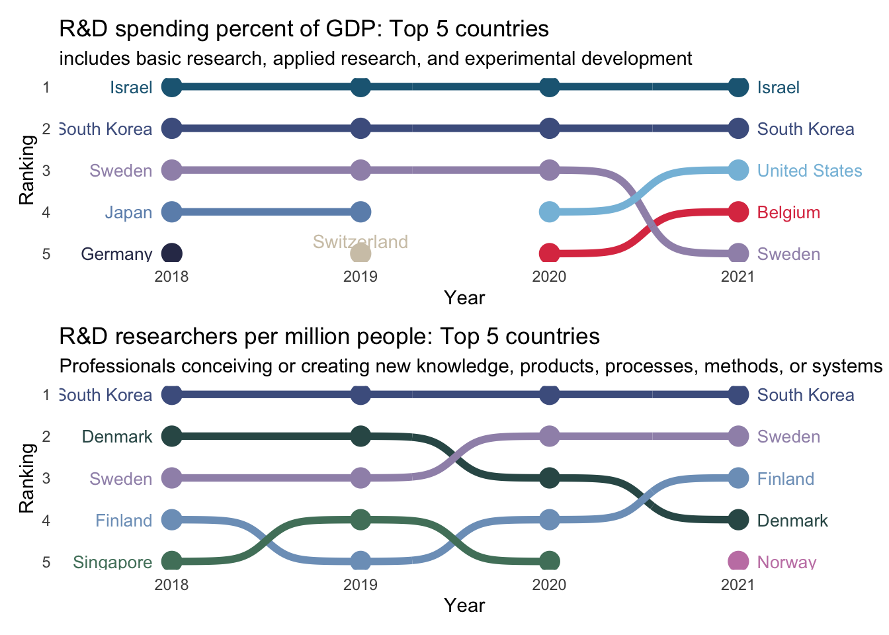

library(tidyverse)
library(Hmisc) # for %nin%
library(janitor)
library(owidapi)
library(ggbump)
library(ggeasy)
library(patchwork)day 5 ranking
load packages
These plots from Our World in Data caught my eye this week given all that is going on in the USA with layoffs and funding cuts (R&Dspending ; R&Dresearchers).
They illustrate the amount of money that countries spend on research and development as a percent of GDP and the number of people that work in R&D as a function of population and GDP. The theme today is ranking, so I wonder whether I can look at where the USA ranks relative to other countries on these metrics.
read in the data
Here I am reading the data and renaming variables. I am also filtering out some regions that had appeared in the country variable.
# read spend data
spend <- read_csv("https://ourworldindata.org/grapher/research-spending-gdp.csv?v=1&csvType=full&useColumnShortNames=true") %>%
clean_names %>%
select(country = entity, year, rdgdp = gb_xpd_rsdv_gd_zs)
remove <- c("North America (WB)" , "East Asia and Pacific (WB)", "High-income countries", "World", "European Union (27)", "Europe and Central Asia (WB)", "South Asia (WB)")
spend <- spend %>%
filter(country %nin% remove)
# read people data
people <- read_csv("https://ourworldindata.org/grapher/researchers-in-rd-per-million-people-vs-gdp-pc.csv?v=1&csvType=full&useColumnShortNames=true") %>%
clean_names %>%
select(country = entity, year, researchers_per_mill = sp_pop_scie_rd_p6, gdp_per_cap = ny_gdp_pcap_pp_kd) %>%
filter(!is.na(researchers_per_mill)) get ranks
I am most interested in the top5 ranked countries in terms of the percent of GDP they spend on R&D. I group by year and create a new variable that is the rank of the researchers as a function of gdp. I remember to ungroup() the data before arranging by year and rank.
Then I make a dataframe with only the top 5 countries by rank for each year and filter the data to only include 2018-2021, and repeat the process for the people data.
# get spend ranks
spend_rank <- spend %>%
group_by(year) %>%
mutate(rank = rank(-rdgdp, ties.method = "random")) %>%
ungroup() %>%
arrange(-year, rank)
top5spend <- spend_rank %>%
filter(rank <=5) %>%
filter(year >= 2018) %>%
filter(year < 2022)
# get people ranks
people_rank <- people %>%
group_by(year) %>%
mutate(rank = rank(-researchers_per_mill, ties.method = "random")) %>%
ungroup() %>%
arrange(-year, rank)
top5people <- people_rank %>%
filter(rank <=5) %>%
filter(year >= 2018) %>%
filter(year < 2022)bump plots
I hadn’t really heard of a “bump” plot before I looked at the RGraphGallery for ranking data inspiration. The ggbump package makes it really easy to plot rankings in this way.
spend
top5spend %>%
ggplot(aes(year, rank, color = country)) +
geom_point(size = 5) +
geom_bump(size = 2, smooth = 8) +
geom_text(data = top5spend %>% filter(year == min(year)),
aes(x = year - .1, label = country), size = 3.5, hjust = 1) +
geom_text(data = top5spend %>% filter(year == max(year)),
aes(x = year + .1, label = country), size = 3.5, hjust = 0) +
scale_y_reverse() +
scale_x_continuous(limits = c(2017.6, 2021.5),
breaks = seq(2018, 2021, 1)) +
theme_minimal() +
easy_remove_legend() +
easy_remove_gridlines() 
It is interesting that Israel and South Korea are clearly in the lead when it comes to investment in R&D as a percent of GDP. The United States only features in the top 5 since 2020.
people
What about the R&D workforce? How many researchers are working in each of these countries?
I expected more overlap between the number of people working the R&D per million and the GDP spend. Israel and the USA are nowhere to be seen. South Korea comes up on top, and Scandinavian countries are really highly represented.
top5people %>%
ggplot(aes(year, rank, color = country)) +
geom_point(size = 5) +
geom_bump(size = 2, smooth = 8) +
geom_text(data = top5people %>% filter(year == min(year)),
aes(x = year - .1, label = country), size = 3.5, hjust = 1) +
geom_text(data = top5people %>% filter(year == max(year)),
aes(x = year + .1, label = country), size = 3.5, hjust = 0) +
scale_y_reverse() +
scale_x_continuous(limits = c(2017.6, 2021.5),
breaks = seq(2018, 2021, 1)) +
theme_minimal() +
easy_remove_legend() +
easy_remove_gridlines() 
OK- adapting the code from the ggbump package vignette gets me most of the way there… but there are a couple things I want to change.
- the colour palette (I need to make the colour associated with each country consistent across this and the people plot below)
- titles, axis labels
colours
I would like to present these two plots together, so need to make the colours associated with each country distinct, but the same across plots (i.e. South Korea and Sweden need to be associated with the same colour in both plots).
After much fiddling with scale_colour_manual(), I realised that a colour palette was probably the best way to go. The manu package has lovely palettes inspired by New Zealand birds.
I need one palette that has 8 colours for the spend plot and another that has 6 colours for the people plot. I decided to use the 6 colour kereru palette for the people plot and to add a couple of those colours to the takehe palette (plus an extra blue), to make up the 8 colours needed for the spend plot.
To ensure that the order of the countries / colours lined up, I made country a factor and checked that the levels of that factor matched the palette.
top5spend$country <- as.factor(top5spend$country)
levels(top5spend$country)[1] "Belgium" "Germany" "Israel" "Japan"
[5] "South Korea" "Sweden" "Switzerland" "United States"palette_takehe_plus <- c("#DD3C51", "#313657", "#1F6683", "#6C90B9", "#4d5f8e","#A092B7","#D1C7B5", "#85BEDC")top5people$country <- as.factor(top5people$country)
levels(top5people$country)[1] "Denmark" "Finland" "Norway" "Singapore" "South Korea"
[6] "Sweden" palette_kereru <- c("#325756", "#7d9fc2", "#C582B2", "#51806a", "#4d5f8e", "#A092B7")s <- top5spend %>%
ggplot(aes(year, rank, color = country)) +
geom_point(size = 5) +
geom_bump(size = 2, smooth = 8) +
scale_colour_manual(values = palette_takehe_plus) +
geom_text(data = top5spend %>% filter(year == min(year)),
aes(x = year - .1, label = country), size = 3.5, hjust = 1) +
geom_text(data = top5spend %>% filter(year == max(year)),
aes(x = year + .1, label = country), size = 3.5, hjust = 0) +
scale_y_reverse() +
scale_x_continuous(limits = c(2017.6, 2021.5),
breaks = seq(2018, 2021, 1)) +
theme_minimal() +
easy_remove_legend() +
easy_remove_gridlines() +
labs(title = "R&D spending percent of GDP: Top 5 countries",
subtitle = "includes basic research, applied research, and experimental development",
y = "Ranking", x = "Year") +
geom_text(data = data.frame(x = 2019, y = 4.7, label = "Switzerland"),
mapping = aes(x = x, y = y, label = label),
size = 3.7, colour = "#D1C7B5", inherit.aes = FALSE)
sp <- top5people %>%
ggplot(aes(year, rank, color = country)) +
geom_point(size = 5) +
geom_bump(size = 2, smooth = 8) +
scale_colour_manual(values = palette_kereru) +
geom_text(data = top5people %>% filter(year == min(year)),
aes(x = year - .1, label = country), size = 3.5, hjust = 1) +
geom_text(data = top5people %>% filter(year == max(year)),
aes(x = year + .1, label = country), size = 3.5, hjust = 0) +
scale_y_reverse() +
scale_x_continuous(limits = c(2017.6, 2021.5),
breaks = seq(2018, 2021, 1)) +
theme_minimal() +
easy_remove_legend() +
easy_remove_gridlines() +
labs(title = "R&D researchers per million people: Top 5 countries",
subtitle = "Professionals conceiving or creating new knowledge, products, processes, methods, or systems",
y = "Ranking", x = "Year")
p
patchwork
The patchwork package makes it super easy to combine different ggplots into a single output. Here I am using the / operator to combine plots vertically (if you wanted them side by side you would use the + operator).
s / p